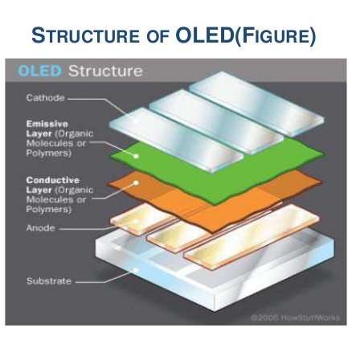

Giao tiếp ESP32 với OLED qua I2C¶
OLED là gì?¶
OLED là viết tắt của chữ Organic Light Emitting Diode dùng để chỉ cấu tạo của màn hình gồm các diode phát quang hữu cơ, vật liệu này có khả năng phát sáng khi có dòng điện chạy qua, người dùng có thể hiểu đơn giản công nghệ màn hình OLED sử dụng vô số các led phát quang để tạo nên một màn hình hiển thị lớn tùy theo kích thước chế tạo và công nghệ của nhà sản xuất. Công nghệ màn hình này có khả năng cho chất lượng ảnh tươi, độ tái tạo màu sắc tuyệt vời. Hơn nữa do được cấu tạo bằng các diode phát quang nên người ta có thể chế tạo được màn hình OLED mỏng hơn rất nhiều so với công nghệ màn hình LCD trước đây.
Một màn hình OLED bao gồm một lớp vật liệu hữu cơ với chủ yếu là cacbon nằm giữa hai điện cực anot và catot sẽ tự động phát sáng mỗi khi có dòng điện chạy qua.

OLED có rất nhiều ưu điểm vượt trội:
- Hình ảnh nịnh mắt, sắc nét.
- Độ sáng và độ tương phản cao.
- Màu đen hiển thị sâu.
- Có khả năng tùy biến theo nhiều hình dạng khác nhau.
- Tiết kiệm năng lượng.
- Góc nhìn rộng hơn.
Bên cạnh đó OLED vẫn còn có một số nhược điểm sau:
- Chi phí sản xuất cao.
- Tuổi thọ kém.
Trong bài viết này sẽ sử dụng đến màn hình SSD1306 OLED 128x64 0.96"-I2C.
{kind=link}
Thông số kỹ thuật:
- Điện ấp sử dụng:
3V3đến5V(DC)- Công suất tiêu thụ:
0.04W- Góc hiển thị: Lớn hơn
16 độ- Độ phân giải:
128x64pixel (Điểm ảnh)- Độ rộng màn hình:
0.96"- Giao tiếp:
I2C- Màu: Trắng và Đen
I2C¶
Ở trên chúng ta thấy rằng SSD1306_OLED sử dụng giao tiếp I2C, vậy I2C là gì?
I²C, viết tắt của từ Inter-Integrated Circuit, là một loại bus nối tiếp được phát triển bởi hãng sản xuất linh kiện điện tử Philips. Ban đầu, loại bus này chỉ được dùng trong các linh kiện điện tử của Philips. Sau đó, do tính ưu việt và đơn giản của nó, I²C đã được chuẩn hóa và được dùng rộng rãi trong các mô đun truyền thông nối tiếp của vi mạch tích hợp ngày nay.
Cấu tạo và nguyên lý hoạt động của I2C¶
Khi có nhiều thiết bị I2C trên bus, thì phải (và chỉ) có 1 Master để điều khiển Bus - Có thể có nhiều Slave bị động, được điều khiển bởi Master
I2C sử dụng hai đường truyền tín hiệu:
- Một đường tạo xung dao động (SCL) chỉ do Master phát đi ( thông thường ở 100kHz và 400kHz, mức cao nhất là 1Mhz và 3.4MHz).
- Một đường truyền dữ liệu (SDA) từ Master sang Slave hoặc ngược lại.
Về lý thuyết lẫn thực tế I2C sử dụng 7 bit (10 bit - chế độ mở rộng) để định địa chỉ, do đó trên một bus có thể có tới 2^7 địa chỉ tương ứng với 128 thiết bị có thể kết nối, nhưng chỉ có 112 , 16 địa chỉ còn lại được sử dụng vào mục đích riêng. Bit còn lại quy định việc đọc hay ghi dữ liệu (1 là write, 0 là read).
Điểm mạnh của I2C chính là sự đơn giản của nó: một khối điều khiển trung tâm có thể điều khiển cả một mạng thiết bị mà chỉ cần hai lối ra điều khiển.
Các chế độ hoạt động của I2C¶
Dựa vào tốc độ sẽ có 2 loại:
- Chế độ chuẩn (standard mode) hoạt động ở tốc độ 100Kbit/s.
- Chế độ tốc độ thấp (low-speed mode) hoạt động ở tốc độ 10 Kbit/s.
Nếu chia theo quan hệ chủ tớ:
- Một Master một Slave.
- Một Master nhiều Slave.
Ghi chú
Mỗi thiết bị khi làm Slave sẽ có một địa chỉ khác nhau để thiết bị Master có thể nhận diện được và gữi lệnh xuống. Vì vậy sẽ không có chuyện nhầm lẫn giữa các thiết bị.
Ghi chú
Hai chân truyền dữ liệu SCL và SDA luôn hoạt động ở chế độ mở, vì vậy cần phải có một điện trở kéo (tức là Vcc -> trở -> SCL/SDA). Giá trị của điện trở giao động từ 1kOhm đến 4.7kOhm tùy theo tốc độ truyền (thông thường sẽ sử dụng trở 2kOhm cho tốc độ 400kbps và 10kOhm cho tốc độ 100kbps)
Demo¶
Linh kiện sử dụng:
Board ESP32-Wifi-Uno https://iotmaker.vn/esp32-iot-uno.html SSD1306 OLED 128x64 0.96 https://iotmaker.vn/ssd1306-oled-096inch-128x64-i2c.html
Về phần mềm, để dễ dàng lập trình cho OLED trên android các bạn tải thư viện SSD1306.
Để thêm thư viện vào arduino các bạn mở Arduino lên và chọn Menu Sketch\Inclue Library\Add .Zip Library sau đó bạn tìm tới thư mục chứa master.zip và nhấn OK.
Dưới đây sẽ là một số lệnh cơ bản trong thư viện:
Điều khiển màn hình:¶
Khởi tạo:
- void
init()¶
Giải phóng bộ nhớ đã được sử dụng:
void(end)¶
Reset:
- void
resetDisplay(void)¶
Kết nối lại:
- void
reconnect(void)¶
Mở màn hình:
- void
displayOn(void)¶
Tắt màn hình:
- void
displayOff(void)¶
Xóa bộ nhớ đệm:
- void
clear(void)¶
Hiển thị ra màn hình:
- void
display(void)¶
Đặt độ tương phản:
- void
setContrast(char contrast)¶
Đảo chiều màn hình:
- void
flipScreenVertically()¶
Vẽ ảnh pixel:¶
Thiết lập màu sắc (color có thể là WHITE BLACK hoặc là INVERSE):
- void
setColor(color)¶
Vẽ một điểm tại vị trí x,y:
- void
setPixel(int16_t x, int16_t y)¶
Vẽ đường thẳng từ điểm 0 tới điểm 1:
- void
drawLine(int16_t x0, int16_t y0, int16_t x1, int16_t y1)¶
Vẽ hình chữ nhật:
Vẽ hình tròn:
Vẽ đường thẳng theo chiều dọc:
- void
drawHorizontalLine(int16_t x, int16_t y, int16_t length)¶
Vẽ đường thẳng theo chiều ngang:
- void
drawVerticalLine(int16_t x, int16_t y, int16_t length)¶
Viết chữ:¶
Lấy độ dài của một chuỗi:
uint16_t getStringWidth(const char* text, uint16_t length);hoặc
- uint16_t
getStringWidth(String text)¶
Chỉnh vị trí của chuỗi (TEXT_ALIGN_LEFT, TEXT_ALIGN_CENTER, TEXT_ALIGN_RIGHT, TEXT_ALIGN_CENTER_BOTH)
- void
setTextAlignment(OLEDDISPLAY_TEXT_ALIGNMENT textAlignment)¶
Có thể xem thêm về thư viện tại https://github.com/squix78/esp8266-oled-ssd1306
Code Example¶
#include <Wire.h> #include "SSD1306.h> // Initialize the OLED display using Wire library SSD1306 display(0x3c, 21, 22); // Adapted from Adafruit_SSD1306 void drawLines() { for (int16_t i=0; i<DISPLAY_WIDTH; i+=4) { display.drawLine(0, 0, i, DISPLAY_HEIGHT-1); display.display(); delay(10); } for (int16_t i=0; i<DISPLAY_HEIGHT; i+=4) { display.drawLine(0, 0, DISPLAY_WIDTH-1, i); display.display(); delay(10); } delay(250); display.clear(); for (int16_t i=0; i<DISPLAY_WIDTH; i+=4) { display.drawLine(0, DISPLAY_HEIGHT-1, i, 0); display.display(); delay(10); } for (int16_t i=DISPLAY_HEIGHT-1; i>=0; i-=4) { display.drawLine(0, DISPLAY_HEIGHT-1, DISPLAY_WIDTH-1, i); display.display(); delay(10); } delay(250); display.clear(); for (int16_t i=DISPLAY_WIDTH-1; i>=0; i-=4) { display.drawLine(DISPLAY_WIDTH-1, DISPLAY_HEIGHT-1, i, 0); display.display(); delay(10); } for (int16_t i=DISPLAY_HEIGHT-1; i>=0; i-=4) { display.drawLine(DISPLAY_WIDTH-1, DISPLAY_HEIGHT-1, 0, i); display.display(); delay(10); } delay(250); display.clear(); for (int16_t i=0; i<DISPLAY_HEIGHT; i+=4) { display.drawLine(DISPLAY_WIDTH-1, 0, 0, i); display.display(); delay(10); } for (int16_t i=0; i<DISPLAY_WIDTH; i+=4) { display.drawLine(DISPLAY_WIDTH-1, 0, i, DISPLAY_HEIGHT-1); display.display(); delay(10); } delay(250); } // Adapted from Adafruit_SSD1306 void drawRect(void) { for (int16_t i=0; i<DISPLAY_HEIGHT/2; i+=2) { display.drawRect(i, i, DISPLAY_WIDTH-2*i, DISPLAY_HEIGHT-2*i); display.display(); delay(10); } } // Adapted from Adafruit_SSD1306 void fillRect(void) { uint8_t color = 1; for (int16_t i=0; i<DISPLAY_HEIGHT/2; i+=3) { display.setColor((color % 2 == 0) ? BLACK : WHITE); // alternate colors display.fillRect(i, i, DISPLAY_WIDTH - i*2, DISPLAY_HEIGHT - i*2); display.display(); delay(10); color++; } // Reset back to WHITE display.setColor(WHITE); } // Adapted from Adafruit_SSD1306 void drawCircle(void) { for (int16_t i=0; i<DISPLAY_HEIGHT; i+=2) { display.drawCircle(DISPLAY_WIDTH/2, DISPLAY_HEIGHT/2, i); display.display(); delay(10); } delay(1000); display.clear(); // This will draw the part of the circel in quadrant 1 // Quadrants are numberd like this: // 0010 | 0001 // ------|----- // 0100 | 1000 // display.drawCircleQuads(DISPLAY_WIDTH/2, DISPLAY_HEIGHT/2, DISPLAY_HEIGHT/4, 0b00000001); display.display(); delay(200); display.drawCircleQuads(DISPLAY_WIDTH/2, DISPLAY_HEIGHT/2, DISPLAY_HEIGHT/4, 0b00000011); display.display(); delay(200); display.drawCircleQuads(DISPLAY_WIDTH/2, DISPLAY_HEIGHT/2, DISPLAY_HEIGHT/4, 0b00000111); display.display(); delay(200); display.drawCircleQuads(DISPLAY_WIDTH/2, DISPLAY_HEIGHT/2, DISPLAY_HEIGHT/4, 0b00001111); display.display(); } void printBuffer(void) { // Initialize the log buffer // allocate memory to store 8 lines of text and 30 chars per line. display.setLogBuffer(5, 30); // Some test data const char* test[] = { "Hello", "World" , "----", "Show off", "how", "the log buffer", "is", "working.", "Even", "scrolling is", "working" }; for (uint8_t i = 0; i < 11; i++) { display.clear(); // Print to the screen display.println(test[i]); // Draw it to the internal screen buffer display.drawLogBuffer(0, 0); // Display it on the screen display.display(); delay(500); } } void setup() { display.init(); // display.flipScreenVertically(); display.setContrast(255); drawLines(); delay(1000); display.clear(); drawRect(); delay(1000); display.clear(); fillRect(); delay(1000); display.clear(); drawCircle(); delay(1000); display.clear(); printBuffer(); delay(1000); display.clear(); } void loop() { }
Các bạn có thể lấy thêm ví dụ trong thư mục Example trong file Zip các bạn download vừa rồi.